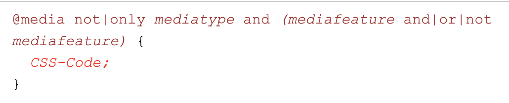

In this week, I have decided the layout of my project, I want to do a slide down toggle in my project.
So I found following vedio is very helpful
Also I found something very interesting to me. In CSS @media rule there are some syntax and we can use
some keyword define the code "not", "only", "and" etc.

Example code
Question I have:
For this week's material, I don't have specific question so far. Just keep working on the project.